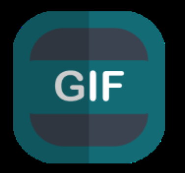
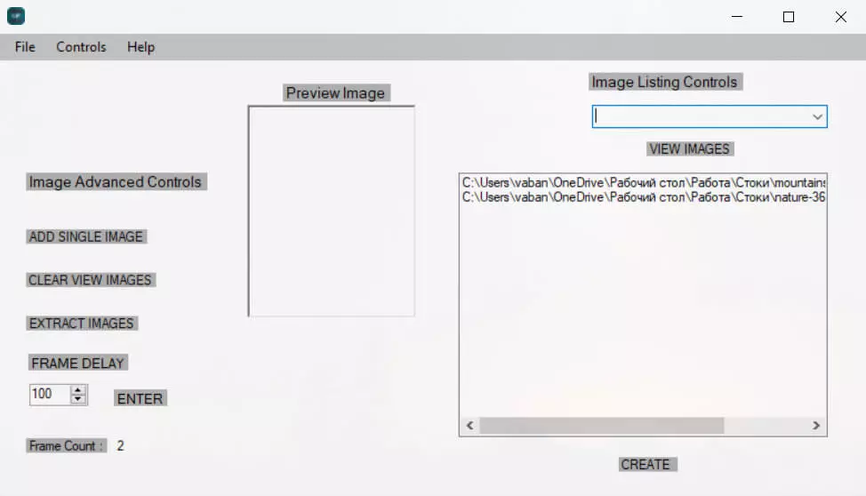

_____________________________________________________________________________________________________________
Бесплатный софт на английском языке от компании Microsoft.
Он позволит создавать гифки из фотоснимков: загрузите любое количество файлов и программа автоматически соединит их в один документ.
Установить софт можно из Microsoft Store, он совместим с 32- и 64-разрядными версиями Windows.

Логотип Microsoft GIF Animator

Меню приложения Microsoft GIF Animator
Главные преимущества Microsoft GIF Animator:
Главные недостатки Microsoft GIF Animator:
Microsoft GIF Animator предлагает простой в использовании интерфейс и поддержку практически любых популярных графических форматов, подробное описание данного сервиса и как им пользоваться можно посмотреть по ссылке: Microsoft GIF Animator,
Пользование